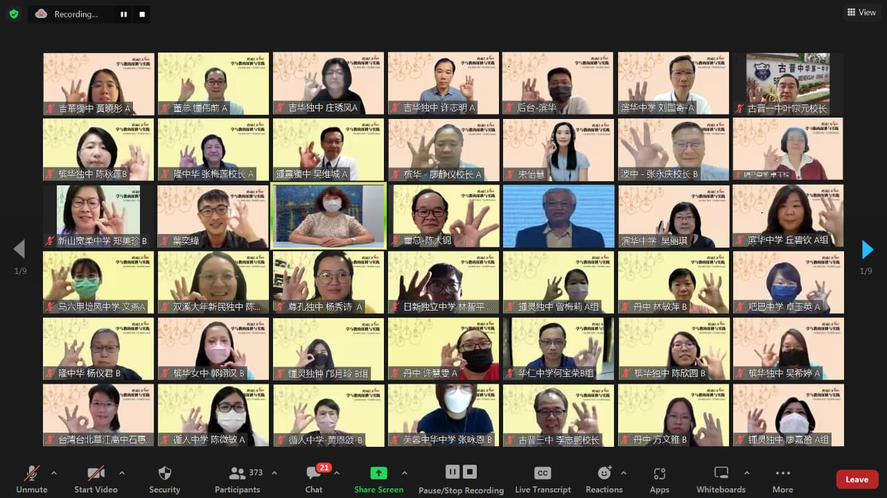

跨阅2.0：学与教的深耕与实践工作坊
——跨阅教学再跨出一大步
跨阅2.0：学与教的深耕与实践工作坊大合照。
为期三天的“跨阅2.0：学与教的深耕与实践工作坊”于2022年8月5日至7日通过线上会议室顺利举行。本次工作坊由董总主催、巴生滨华中学主办，波德申中华中学、亚罗士打吉华独立中学协办，以及伙伴学校吉隆坡循人中学、芙蓉中华中学、宽柔中学、槟城槟华女子独立中学、沙巴吧巴中学和古晋中华第一中学联合举办，共获全国34所独中447名行政人员和教师，以及26名董总中央委员、近50名华文独中工委会各学术委员，以及18名董总行政部同事参与。
该工作坊分别以语文、数学和科学为主，并以专题演讲、分组实作和综合座谈的模式进行，并在董总主席陈大锦、台湾丹凤高中曾慧媚校长和滨华中学董事长谢松坤博士致词下掀开序幕。
跨阅教学的深耕与实践
在开幕仪式上，董总主席陈大锦表示本次工作坊课程设计紧扣董总于2018年发布的《全国华文独中教育蓝图》的理念，以及紧贴据此蓝图所草拟的课程总纲的“三个面向、九个项目”之核心素养的改革目标。他说，此工作坊同时扎根阅读素养，结合联合国永续发展目标（SDGs）国际议题，发掘学校本位课程的规划与发展目标，最后通过主题探究与实作，不断深化及拓展各跨阅课程的模块与样态。
台湾新北市丹凤高中曾慧媚校长以“一个人走，走很快，一群人走，走很远。”指出了跨科阅读素养课程设计三年计划的核心重点。她也表示期待跨阅2.0工作坊能以跨学科团队合作的互动学习模式，推动马来西亚独中学校本位课程、校订课程等不同的思维，扩大跨阅2.0的新视野。
滨华中学董事长谢松坤博士则提及在这次举办的跨阅2.0中，参与发表的教师将SDGs融入课程，纳入了环境保护、清洁用水和粮食供应等议题。透过阅读、实验和实地考察让学生从跨领域的宏观视野，去探讨、去研究无法由单一领域解决的难题，培养学生批判思考和解决问题的能力，提升面对议题的责任感和行动力。
放眼国际议题，致力关注本土
素养教育在各地推崇并成为现代教育的目标和方向。跨阅2.0工作坊同样抱持着这个理念推行课程，因此本次课程重点在于扎根阅读素养，并结合联合国永续发展目标（SDGs）国际议题。另外，本工作坊题旨“深耕与实践”可通过专题演讲中看见。老师们所发表的课程，不仅课题更深入，而且都是以实际教案为基础，是经历过多次共备再进行试课所产出的课程。
该工作坊中有三项以关注环境污染议题的课程分享。波德申中华中学关启匡老师分享的〈爱吾波德申海域〉以亲海、知海、爱海的概念带领学生关注波德申海域的污染问题；芙蓉中华中学郑伶俐老师分享关注水源污染的〈酵素泥球-净化水源〉课程；而关注巴生河污染问题的巴生滨华中学〈“河”你谈情〉课程，则由卓奕全老师、杨家荣老师和陆孝伟老师进行分享。另外，同样关注本土议题的还有亚罗士打吉华独立中学黄晓彤老师，她分享以亚罗士打标志——稻田为主题的“鱼米之象”，是一项培养学生关注粮食和关怀乡土意识的课程。
另外，三项以关注环保议题为主的〈生活零浪费·资源不作废〉由沙巴吧巴中学卓玉英老师和陈戊玲老师发表，〈点椰成宝〉则由槟城槟华女子独立中学杨百欣老师发表，还有〈“自热火锅”·一锅在手，“美”“识”无穷〉是由循人中学曾佩敏老师进行分享。
跨阅工作坊中数学组分享的是以游戏化方式进行的课程设计，将数学科中的知识点套入有趣的游戏，让学生更加深刻记得课程知识点的相应原理。分享的课程包括波德申中华中学谢燕燕老师分享〈圆来如此〉，新山宽柔中学李伟晋老师分享〈门当户对〉，古晋中华第一中学陈鹏合老师分享〈翻拍乘式〉，槟城槟华女子独立中学分享〈终于找到你〉，亚罗士打吉华独立中学邓玫雯老师分享〈寻找平衡之源〉，巴生滨华中学黄书丰老师则分享〈半进八两〉。
在工作坊进行期间，专题演讲之后皆有相对应的参与学校带领与会者进行分组实作，而综合座谈的部分则邀请一起参与课程设计的独中老师进行分享。在每一天的工作坊结束前，由担任主办学校的巴生滨华中学吴丽琪校长、协办学校波德申中华中学张永庆校长和亚罗士打吉华独立中学的庄琇凤校长，分别进行小结，代表当日工作坊的结束。
本次工作坊的课程设计，是建基于发掘学校本位课程的规划和发展目标的布局思想维度上，并把学校所在社区、地理、生态环境内所实际存在的各种重大议题融入到校本课程和校订课程内进行探究，通过实地考察式的教学让学生走出校园，以课堂所学去关注社区，把在社区所见带进课室内思索，这旨在摆脱过往的学习模式和思维框架，将课程设计与社区、社会牵起了联系。同时，课程的设计让学生通过活动去深化所学知识，这一切都代表着跨阅教学又向前走一大步，很好地将跨阅教学深耕和实践。